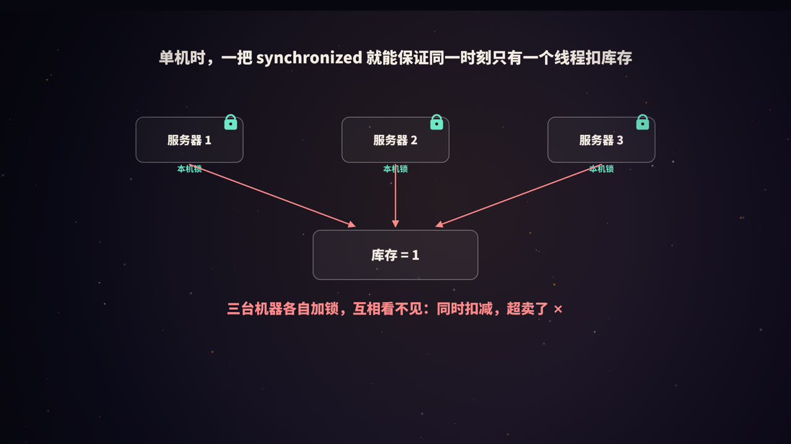
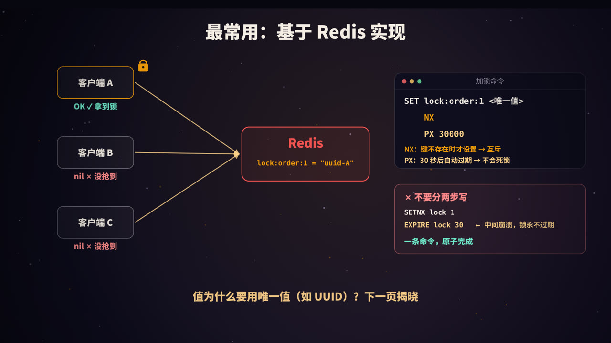

为什么需要分布式锁
在单台机器上，用 synchronized 或 ReentrantLock 就能保证同一时刻只有一个线程执行扣库存的代码。
但服务通常部署在多台机器上。每台机器的锁只在自己的进程内有效，三台机器各自加锁、互相看不见，于是三个请求仍然可能同时扣减库存，造成超卖。
分布式锁就是一把放在公共位置、所有机器都认的锁。典型场景：
- 防止超卖、重复下单、重复支付；
- 定时任务部署在多台机器上，只允许一台执行；
- 缓存失效时，只让一个请求去重建缓存（防击穿，见本系列《Redis 缓存》）；
- 对同一份外部资源的互斥访问。
很多场景其实可以不用分布式锁：比如扣库存，可以用数据库的条件更新
UPDATE ... SET stock = stock - 1 WHERE id = ? AND stock > 0原子完成。能用数据库约束或原子操作解决的，优先不用锁。
一把合格的分布式锁
| 要求 | 含义 |
|---|---|
| 互斥 | 同一时刻，只有一个客户端能持有锁 |
| 不会死锁 | 持有者崩溃、网络断开时，锁也能被释放 |
| 谁加谁解 | 只能释放自己加的锁，不能误删别人的 |
| 高可用 | 锁服务本身不能成为单点故障 |
| 可选：可重入 | 同一个线程可以多次获取同一把锁 |
| 可选：可等待 | 获取失败时可以排队等待，而不是立即返回 |
基于 Redis 实现

加锁
SET lock:order:1 <唯一值> NX PX 30000
NX：只有键不存在时才设置成功，保证互斥；PX 30000：30 秒后自动过期，即使持有者崩溃，锁也会被释放，不会死锁；- 值是一个唯一值（如 UUID），用来标识「这把锁是谁加的」。
返回 OK 表示拿到锁，返回 nil 表示锁已被别人持有。
不要分两步写：
SETNX lock:order:1 1 # 第一步：加锁
EXPIRE lock:order:1 30 # 第二步：设置过期时间
如果在两条命令之间进程崩溃，这把锁就永远不会过期，变成死锁。SET ... NX PX 一条命令就能原子地完成两件事。
坑一：删掉了别人的锁
设想这样一个时序：
- 客户端 A 加锁成功，有效期 30 秒；
- A 遇到长时间的 GC 停顿或网络卡顿，超过了 30 秒；
- 锁自动过期，客户端 B 加锁成功；
- A 恢复执行，业务完成后执行
DEL，把 B 的锁删掉了； - 此时客户端 C 也能加锁成功，B 和 C 同时进入临界区。
解决：释放时先比对，再删除
加锁时写入唯一值，释放时检查值是不是自己的，是才删除。「检查」和「删除」必须原子执行，所以要用 Lua 脚本：
-- KEYS[1]：锁的键 ARGV[1]：加锁时写入的唯一值
if redis.call("GET", KEYS[1]) == ARGV[1] then
return redis.call("DEL", KEYS[1])
end
return 0
如果用两条命令（先 GET 判断，再 DEL），在两条命令之间锁可能刚好过期并被别人拿走，依然会误删。
坑二：业务还没做完，锁就过期了
过期时间设多长？设短了，业务没做完锁就过期，别人进来了；设长了，持有者崩溃后要等很久才能释放。业务耗时往往又是不确定的。
解决：看门狗续期
加锁成功后，启动一个后台线程（看门狗），定期检查：如果业务还在执行，就把锁的过期时间重新延长。
- 业务正常执行时，锁一直有效；
- 业务完成后，主动释放锁，看门狗停止；
- 持有者进程崩溃，看门狗也随之消失，锁会在有效期结束后自动过期。
Java 中最常用的 Redis 客户端 Redisson 内置了这个机制：不指定租约时间时，锁默认有效期 30 秒，每 10 秒（有效期的三分之一）续期一次。
RLock lock = redisson.getLock("lock:order:1");
lock.lock(); // 加锁，不指定时间则启用看门狗
try {
// 业务逻辑
} finally {
lock.unlock(); // 内部会校验是否为当前线程持有
}
// 或者：最多等 3 秒，拿不到就放弃
if (lock.tryLock(3, TimeUnit.SECONDS)) {
try { /* 业务逻辑 */ } finally { lock.unlock(); }
}
Redisson 还实现了可重入（用 Hash 结构记录持有者和重入次数）和等待（通过发布订阅，在锁释放时通知等待者），一般不建议自己从零手写。
坑三：主从切换，锁丢了
Redis 的主从复制是异步的：
- 客户端 A 在主节点上加锁成功；
- 锁还没来得及复制到从节点，主节点就宕机了；
- 从节点被提升为新的主节点，上面没有这把锁；
- 客户端 B 在新主节点上加锁成功，A 和 B 同时持有锁。
方案一：Redlock
Redis 作者提出的 Redlock 算法：部署 5 个相互独立的 Redis 主节点，客户端依次向它们加锁，只有在多数节点（至少 3 个）上加锁成功，且总耗时小于锁的有效期，才算拿到锁。
Redlock 提高了容错能力，但存在争议：分布式系统研究者 Martin Kleppmann 指出，它依赖于「各节点时钟基本准确」「进程停顿时间有限」等假设，在长时间 GC 停顿、时钟跳变等情况下仍可能失效。Redis 作者 antirez 也撰文做了回应。工程实践中，Redlock 需要维护多个独立节点，使用并不普遍。
方案二：Fencing Token
一个更根本的思路是：不要完全依赖锁本身，让被保护的资源也参与校验。
- 每次加锁成功，锁服务返回一个单调递增的编号（fencing token），比如 33、34；
- 客户端访问存储时带上这个编号；
- 存储端记住见过的最大编号，拒绝编号更小的请求。
这样，即使 A 因为停顿而在锁过期后才去写数据，它带的是旧编号 33，而 B 已经用 34 写过了，A 的写入会被拒绝。
在数据库中，可以用版本号（乐观锁）实现类似的效果：
UPDATE account SET balance = ?, version = ? WHERE id = ? AND version < ?;
结论：基于 Redis 的锁只能「尽量」保证互斥，适合效率类场景（偶尔重复执行可以接受，比如避免重复计算）。对于正确性要求极高的场景（比如资金），要么使用 CP 的锁服务，要么在存储层做 fencing 或唯一约束兜底。
基于 ZooKeeper / etcd 实现
ZooKeeper 是一个强一致（CP）的分布式协调服务，利用它的两个特性实现锁：
- 临时节点：创建节点的客户端会话断开后，节点自动删除，天然防止死锁；
- 顺序节点：创建时自动追加一个递增的序号。
加锁流程：
- 每个客户端在
/locks/order-1下创建一个临时顺序节点，如lock-0001、lock-0002、lock-0003； - 序号最小的客户端获得锁；
- 其他客户端只监听排在自己前一个的节点，前一个节点被删除时再检查自己是不是最小的。只监听前一个节点，可以避免锁释放时所有等待者被同时唤醒（羊群效应）；
- 释放锁就是删除自己的节点。
Java 中通常使用 Apache Curator 提供的 InterProcessMutex。etcd 的思路类似：基于租约（lease）实现自动过期，基于 revision 判断先后顺序。
基于数据库实现
最简单的方式是利用数据库的唯一约束：
CREATE TABLE distributed_lock (
lock_key VARCHAR(64) PRIMARY KEY,
owner VARCHAR(64) NOT NULL,
expire_at DATETIME NOT NULL
);
-- 加锁：插入成功即拿到锁，主键冲突说明已被占用
INSERT INTO distributed_lock VALUES ('order:1', 'uuid-A', NOW() + INTERVAL 30 SECOND);
-- 释放：只删除自己的
DELETE FROM distributed_lock WHERE lock_key = 'order:1' AND owner = 'uuid-A';
还需要定时清理过期的记录。也可以直接使用 SELECT ... FOR UPDATE 行锁（见本系列《MySQL 的锁》）。数据库方案实现简单，但性能较低，会给数据库增加压力。
三种方案对比
| Redis | ZooKeeper / etcd | 数据库 | |
|---|---|---|---|
| 性能 | 高 | 中 | 低 |
| 可靠性 | 异步复制，主从切换时可能丢锁 | 强一致（CP），更可靠 | 取决于数据库的高可用 |
| 防死锁 | 过期时间 | 临时节点 / 租约 | 过期时间 + 清理任务 |
| 实现 | 简单，常用 Redisson | 稍复杂，常用 Curator | 最简单 |
| 适合 | 大多数业务场景 | 对一致性要求高的协调场景 | 并发不高、不想引入新组件 |
使用分布式锁的建议
- 能不用就不用：优先考虑数据库原子更新、唯一约束、消息队列串行化等方案；
- 锁的粒度要细：锁
order:1001，而不是锁整个「订单」； - 锁内的逻辑要短：不要在持有锁时调用耗时的外部接口；
- 设置获取超时：用
tryLock设定最长等待时间，避免请求无限堆积； - 一定在 finally 中释放，并只释放自己的锁；
- 关键业务要有兜底：幂等、唯一约束或 fencing，不把正确性完全押在锁上。
高频面试题速答
Q：Redis 分布式锁怎么实现？
用 SET key 唯一值 NX PX 过期时间 原子加锁；释放时用 Lua 脚本比对值后再删除；业务时间不确定时用看门狗续期。
Q：为什么释放锁要用 Lua 脚本？ 「判断是不是自己的锁」和「删除」必须原子执行，否则在两步之间锁可能过期并被别人获取，导致误删。
Q：Redis 主从切换时锁会丢吗？怎么办？ 会，因为复制是异步的。可以用 Redlock 降低风险，但它有争议；对正确性要求高的场景，用 ZooKeeper / etcd，或在存储层使用 fencing token。
Q：ZooKeeper 怎么实现分布式锁？ 创建临时顺序节点，序号最小的获得锁；其他节点监听前一个节点；会话断开时节点自动删除，避免死锁。
总结
- 多机部署时，本机锁失效，需要分布式锁；
- Redis 加锁：
SET NX PX+ 唯一值，一条命令原子完成； - 释放：Lua 脚本比对后删除，只删自己的锁；
- 业务耗时不确定：看门狗续期（Redisson 内置）；
- 主从切换可能丢锁：Redlock 有争议，关键场景用 CP 系统或 fencing token 兜底；
- 能用数据库约束或原子操作解决的，优先不用锁。
参考资料
- Redis 文档：Distributed Locks with Redis；SET 命令.
- Kleppmann, M. (2016). How to do distributed locking. martin.kleppmann.com
- antirez (2016). Is Redlock safe? antirez.com
- Redisson 文档：Distributed locks and synchronizers.
- Apache Curator 文档：Recipes — Shared Reentrant Lock.
- Burrows, M. (2006). The Chubby lock service for loosely-coupled distributed systems. OSDI.